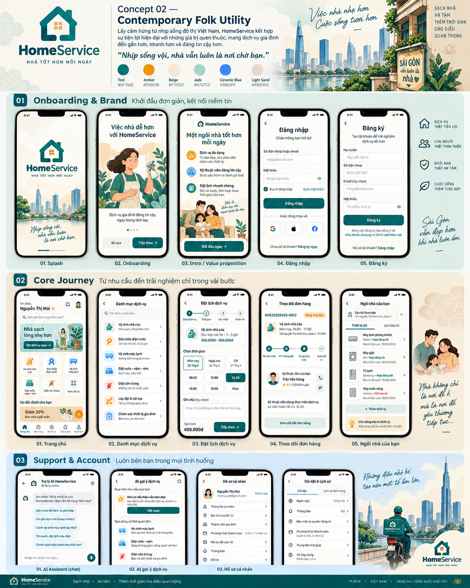

HomeService — Contemporary Folk Utility
Bản đóng gói dựa trực tiếp trên concept bạn đã chốt. Phần “Reference 1:1” hiển thị nguyên ảnh nguồn để giữ hình ảnh giống tuyệt đối; phần “Screen Assets” tách từng màn để tiện bàn giao UI/prototype.
Reference 1:1
